Всичко за Diablo Immortal от Близкон 2019
09/12/2019 - 21:26ч. - Автор: forge
Диабло Имортал не получи особено внимание на Близкон 2019 преди 1 месец и остана в сянката на Диабло 4, но мобилната игра ще донесе много за Диабло феновете от към нови зони, история и забавление. Играта ще продължи класическия изометричен ARPG стил, с който Диабло играчите са запознати, но на мобилна платформа. Вижте всичко, което знаем за нея по-долу, както и геймплей трейлър от Близкон.
Датата на излизане все още е неизвестна.
Blizzard
Не можем да обявим дата на излизане към момента. Отнема изключително много време да се достигне нивото на качество, което целим, а имаме много амбициозни цели за Diablo Immortal. Следете каналите на Диабло за предстоящи новини и се регистрирайте за ранен достъп тук.
Изглежда, че Diablo Immortal ще продължи да се разработва още известно време.
Как да закупя Diablo Immortal?
За момента играта няма предварителни поръчки. Най-вероятно няма да има такива и ще е безплатна за теглене с допълнително платено съдържание, но към момента можете да се регистрирате в Google Play Store за предварителен по-ранен достъп на Android устройства. За iPhone и iPad потребителите, такава регистрация все още няма.
Историята на Diablo Immortal
Действията в играта се развиват в периода след събитията от Диабло 2 и преди тези от Диабло 3. 5 години след разрушаването на Worldstone-а, архангелът Tyrael е смятан за мъртъв и човечеството е оставено само да се справи след неговите действия. Планината Arreat е нищо повече от кратер, а земята около нея изпълнена с отломките на разрушения Worldstone, които привличат древното зло целящо да консумира силите и да ги използва, за да контролира човечеството.
Демонът познат като Skarn, Herald of Terror – бивш член на армията на Diablo – е започнал да събира собствена демонична армия. Skarn цели да събере фрагментите на опорочения Worldstone и да ги използва, за да съживи Diablo и да предизвика отново Вечния Конфликт между ангели и демони. Играчите ще се състезават със силите на Ада да намерят и разрушат фрагментите на Worldstone-а преди те да могат да бъдат използвани срещу човечеството.
 Skarn, Herald of Terror
Skarn, Herald of Terror
Класовете в Diablo Immortal
- Barbarian
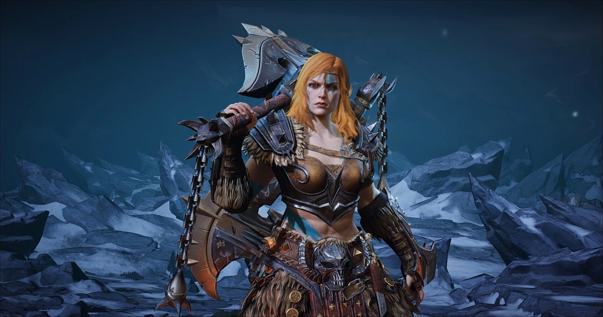
- Умения
- Lacerate - Активира 3 последователни атаки към противника. Третата атака може да предизвиква bleed ефект.
- Hammer of the Ancients - Удря земята, нанасяйки демидж на всички противници по пътя. Може да нанесе допълнителен демидж на зашеметени противници. Има 2 заряда.
- Chained Spear - Хвърля 3 смъртоносни копия, които нанасят демидж и придърпват противниците.
- Whirlwind - Въртите се и нанасяте демидж по пътя си. Всяка атака ви зарежда кръв посредством life steal ефект.
- Furious Charge - Засилвате се напред, нокаутирайки противниците и нанасяйки демидж по пътя си. Има 3 заряда.
- Blood and Fury (Ultimate) - Засилва Lacerate умението, като увеличава дистанцията на атаката, отблъсква противниците и има life steal ефект.
- Умения

- Crusader
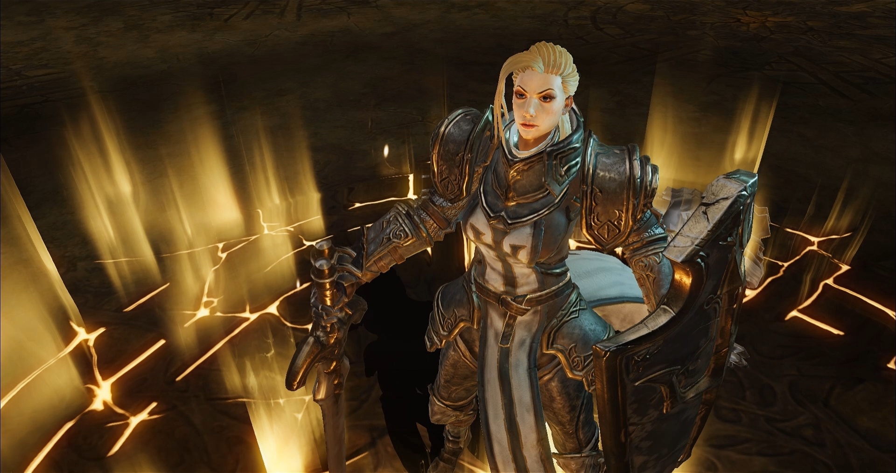
- Умения
- Punish
- Divine Steed
- Sweep Attack
- Falling Sword
- Throw - Хваща случаен противник и го хвърля.
- Unknown (Ultimate) - Засилва Basic Attack умението.
- Умения

|

|

|

|
- Demon Hunter

- Умения
- Crossbow Shot
- Strafe
- Daring Swing
- Rain of Vengeance
- Bullet Rain (Ultimate) - Засилва Crossbow Shot умението, като му позволява да удря многобройни противници с всяка атака и увеличава скоростта на движение.
- Умения

| 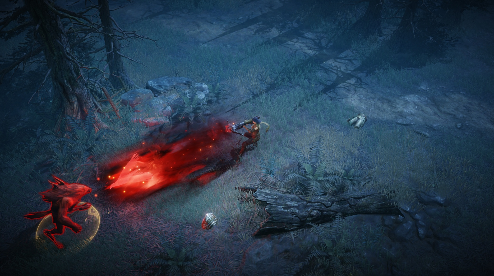 |

|

| 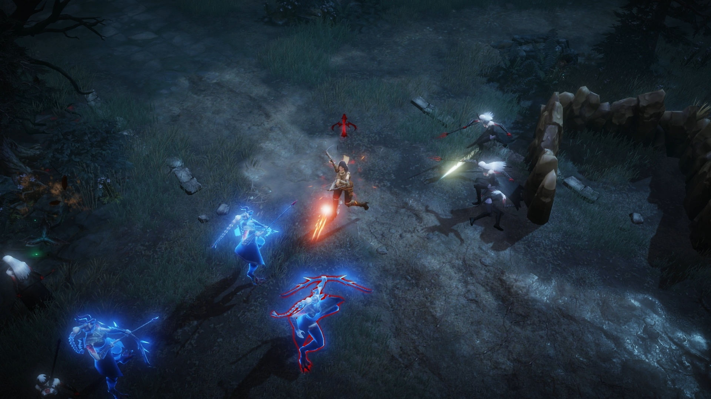 |
- Monk
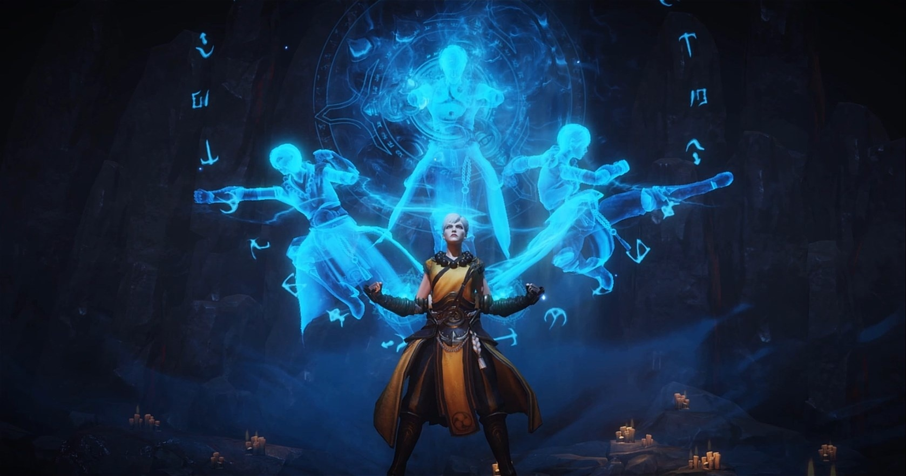
- Умения
- Fists of Thunder - Телепортира Ви до противника и нанася 3 бързи последователни удара.
- Flying Kick - Отскачате напред, нанасяйки демидж по пътя си. Има 3 заряда.
- Seven-Sided Strike - Отскачате бързо от един противник на друг, нанасяйки 7 удара и демидж.
- Imprisoned Fists
- Exploding Palm
- Wave Strike - Активира вълна от енергия, която отблъсква противниците. Когато достигне до крайната си точка, тя експлоадира и нанася демидж на противниците в близост.
- Eye of the Storm - Мистична сила, която продърпва противниците към вас.
- Lightning Flux (Ultimate) - Засилва Fists of Thunder умението, като му позволява да се телепортирате към нови противници и да генерирате светкавична буря, когато противник бъде победен.
- Умения

|

|

|

|

| 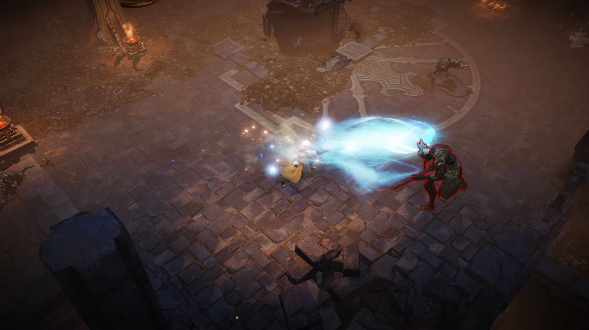 |
- Necromancer

- Умения
- Command Skeletons
- Corpse Lance
- Skeletal Spikes
- Unknown (Ultimate) - Засилва Basic Attack умението.
- Умения
| 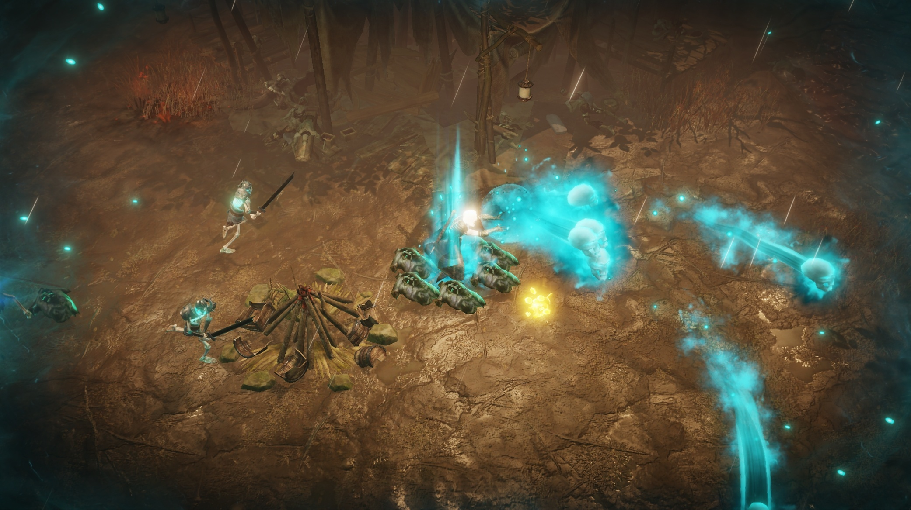 |

|
| 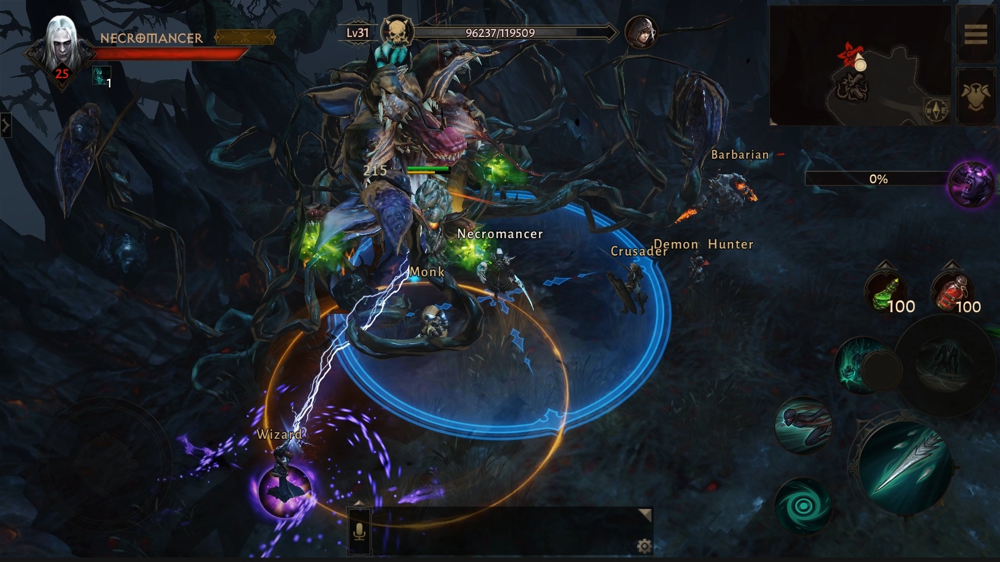 | 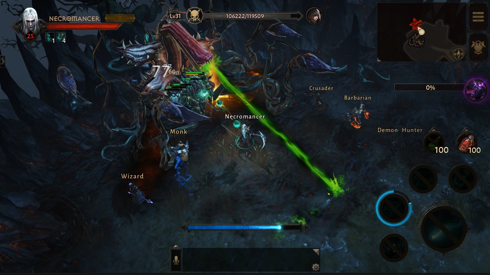 |
- Wizard
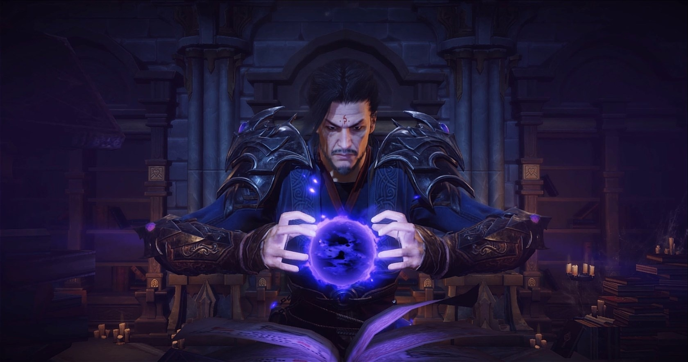
- Умения
- Electrocute - От пръстите си пускате електрическо и удря до 3 противника.
- Arcane Wind - Отблъсква назад и нанася демидж на протиника. Нанася допълнително демидж на възпламенени противници.
- Meteor - Предизвиква Метеор, нанасяйки демидж и възплеманевайки противника в радиус.
- Ray of Frost
- Ice Crystal
- Teleport - Телепортирате се напред. Има 3 заряда.
- Lightning Nova - Хвърляте орб от електричество, който после се връща към вас. Всеки орб нанася демидж, като минава през противниците.
- Full Power (Ultimate) - Засилва Electrocute умението, като увеличава броя на противниците, които можете да ударите и Ви позволява да се движете, докато атакувате.
- Умения
| 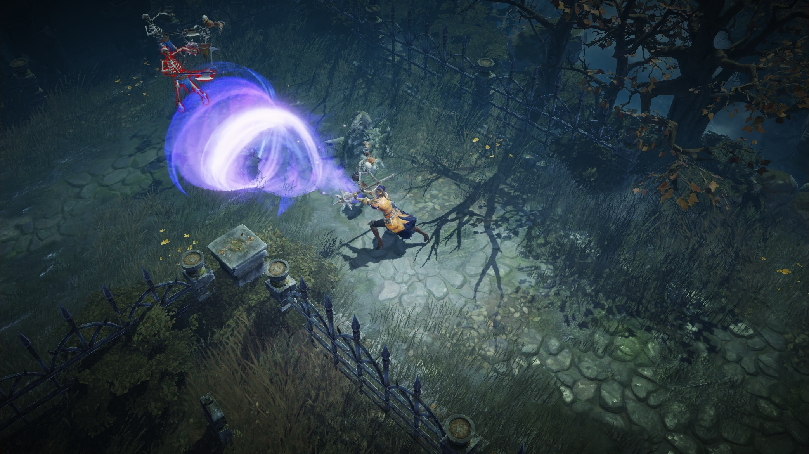 | 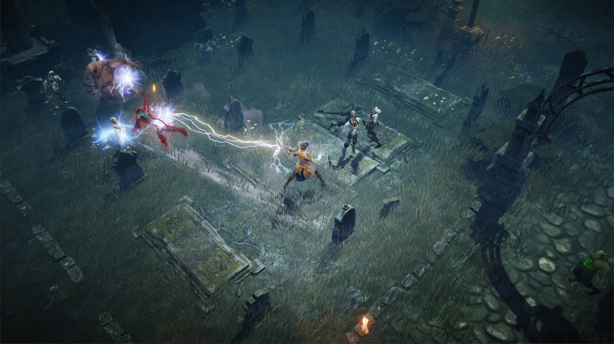 |

| 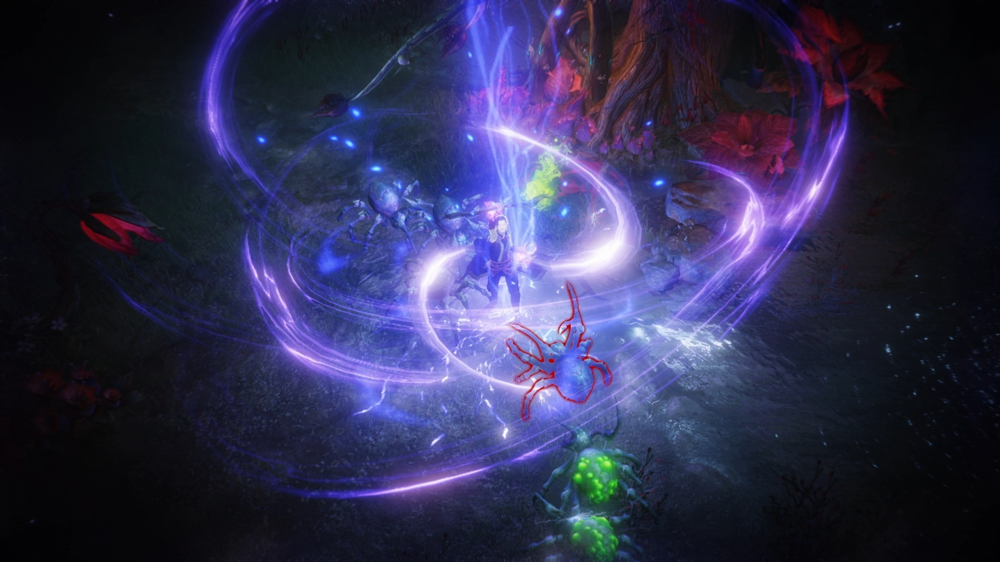 |
Ултимати и Колби
Като допълнение към базовите умения, играчите ще могат да използват мощни Ултимат умения. Всеки клас ще има уникален такъв ултимат. Те се зареждат от основните атаки, а играча ще трябва да планира стратегически кога да го използва.
Колбите също ще се завърнат като основен метод за възстановяване на кръвта в Diablo Immortal.
Светът на Sanctuary
Диабло игрите винаги са целяли да ни разкриват света на Светилището и Diablo Immortal няма да е изключение. Играчите ще могат да посещават нови местности, докато са в търсене на фрагментите на Worldstone-а. Някои зони може би ще са познати на дългогодишните фенове на Диабло, докато други ще са изцяло нови и неразкривани досега.
Централен хъб и 8 уникални зони
Diablo Immortal ще въвлече играчите в мрачен и напрегнагнат свят – разрушен пейзаж, лишен от надежда и осеян с демони.
- Westmarch – Ще разгледаме многобройните улички на Westmarch във времената преди Малтаел да опустоши града. Westmarch ще е основния център за крафтинг, продавачи, ковачи и още. Като допълнение, ще можете да виждате други играчи да се разхождат из града и той ще бъде като споделена публична зона.
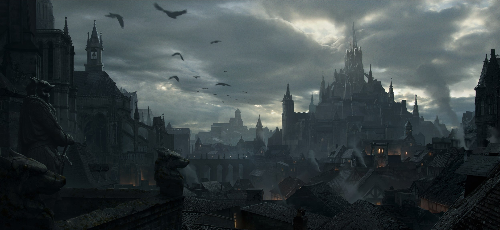 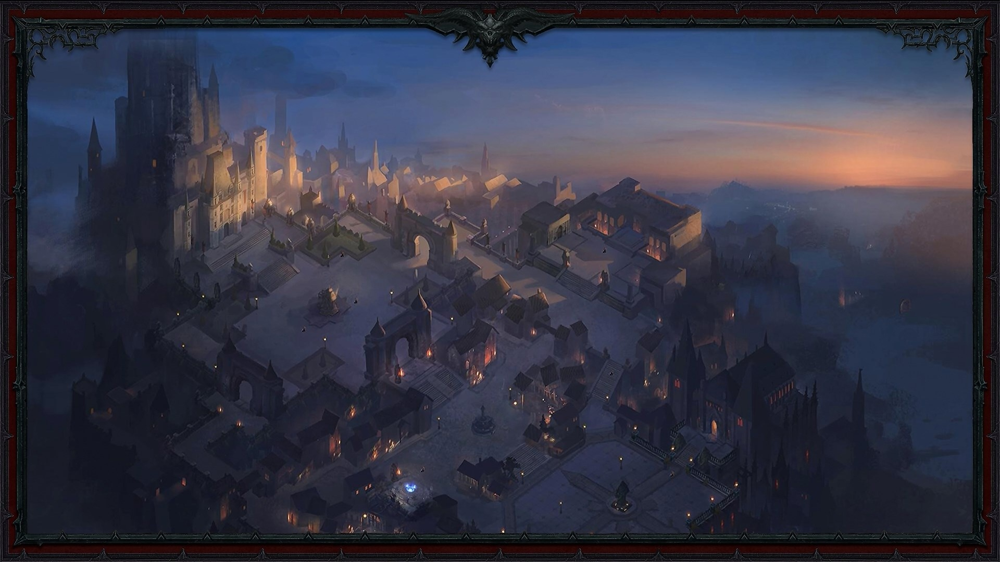 - Останалата част от света: Ще има 8 различни зони в света, като всяка ще бъде с уникална екосистема изпълнена с нови опасни противници.
- Wortham – Игралите Диабло 3 вероятно ще се сетят за тази местност. Намира се на запад в съседство с New Tristram и беше опустошен от Магда. Приключенията на Диабло Имортал започват в това спокойно малко градче. Играчите ще пристигнат на пристанището, от където ще поемат към опорачена гора преди да достигнат до центъра на града и неговата известна църква. Така започва търсенето на Worldstone фрагментите.
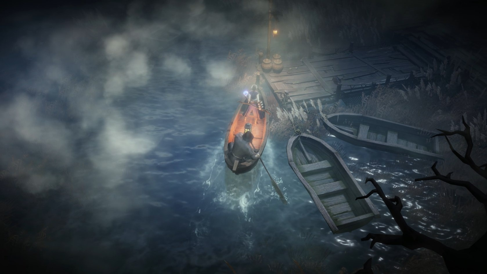 

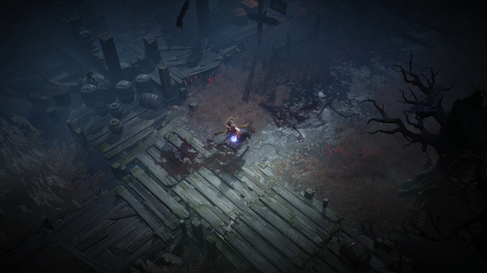 - Dark Wood – Последно тази зона посетихме в Диабло 2, но тя е станала много по-опасна от тогава. Забравено зло е възвърнало силите си в сенките на гората, готово да застраши всеки, който посмее да влезе в нея.


- Library of Zoltun Kulle – За разлика от архивите на Zoltun Kulle от Диабло 3, сега ще посетим друга част от хранилището на известния Хорадрим в пустините на Kehjistan. Тук се намират древни Horadric артефакти и тайни, които се пазят от магическо копие на Zoltun Kulle.


- Bilefen – До Port Justinian лежи мътната зона Bilefen – гъмжаща от Fetish чудовища и други блатни чудовища, които правят пътуването през нея много трудно и опасно.


- Tamoe Mountain – Тази скалиста и вероломна планинска местност освен , че е дом на буйни гори, но в нея се намира и манастира на сестринството Sisterhood of the Sightless Eye от Диабло 2, а в предпланините лежи Ивгород – домът на Монковете.
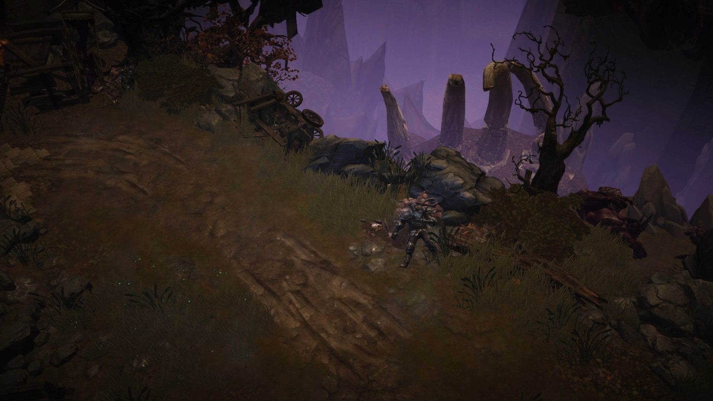 
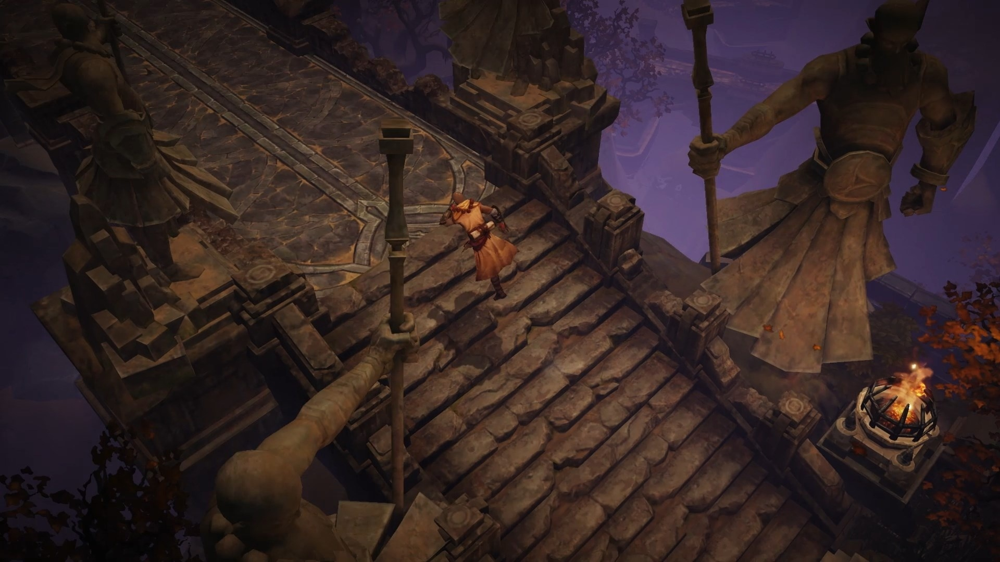 - Ashwold Cemetery – Тази зона се намира близко до родното място на Кралица Asylla. Тук са погребани нейните тленни останки след смъртта ѝ причинена от ръцете на Крал Леорик - нейния полудял съпруг. Пътешествията тук ще Ви отведат към криптите и древното имение където ще се сблъскате с вилнеещи несмъртни и ако сте късметлия – ще срещнете обитавания от духове файтон пътуващ из гробището.

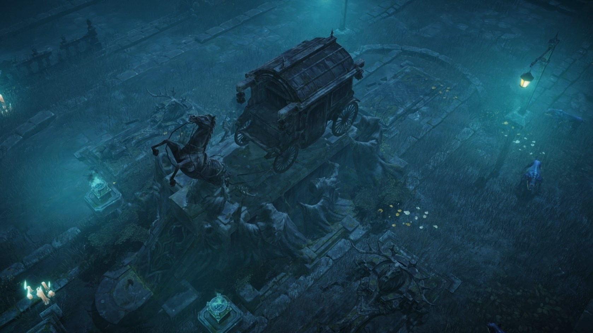 
- Shassar Sea – Далеч на изток от Kehjistan ще достигнем до морето Shassar, където се е сформирало гнездо на демони. Тук ще получим помощ от Демон Хънтъра Valla и нейния учител Josen в опита си да изчитим зоната от демоничната инвазия.


- Frozen Tundra – Замразената тундра представлява останките от някогашната велика планина Ареат, разрушена при унищожаването на Worldstone-а. Този белег на Варварите е всичко, което им е останало, докато клановете им се борят за оцеляване в суровите условия.

- Wortham – Игралите Диабло 3 вероятно ще се сетят за тази местност. Намира се на запад в съседство с New Tristram и беше опустошен от Магда. Приключенията на Диабло Имортал започват в това спокойно малко градче. Играчите ще пристигнат на пристанището, от където ще поемат към опорачена гора преди да достигнат до центъра на града и неговата известна църква. Така започва търсенето на Worldstone фрагментите.
Чудовища
Както винаги, Диабло Имортал ще включва изцяло нови чудовища, а други злодеи ще се завърнат с обновен дизайн и нови начини, по които да ги убиете. Като например Vile Mothers от Диабло 2.
Като малък тийзар в края на Геймплей видеото ни беше показан Баал.

Подземия с 7 инстанции
Освен 8-те зони от външния свят, Диабло Имортал ще включва седем подземия. Те ще позволят до 4 играча да се впуснат в битка срещу опасни противници за изобилен луут. В земите от външния свят чудовищата се съживяват след известно време, но тук няма да е така, докато самото подземие не е приключено от партито.
- Kikuras Rapids - Kikuras Rapids се намира дълбоко в Bilefen зоната. Тази река си намира път през джунглата и прелива от чудовища. Изисква се много, за да останете жив в тази мътна вода на разнебитен дървен сал.
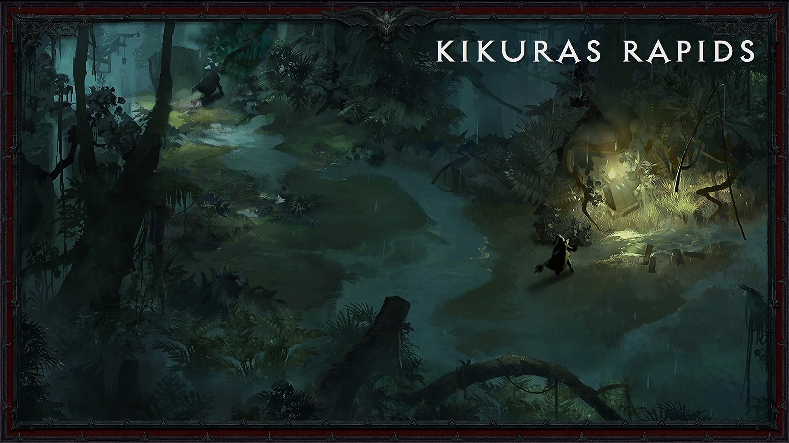 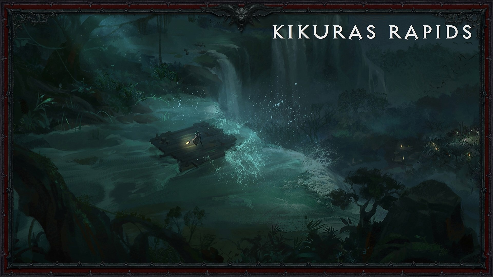 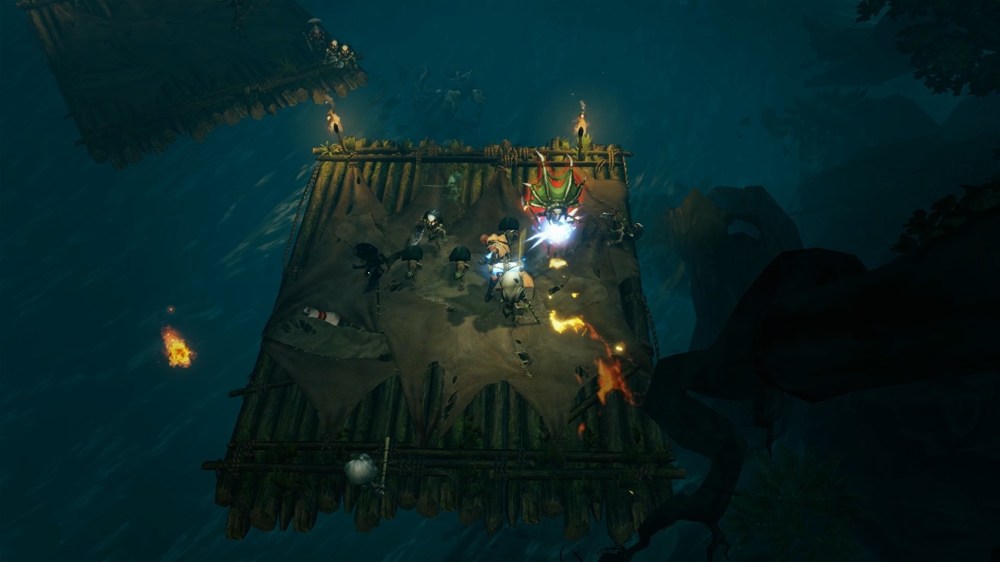 - Tomb of Fahir – Впуснете се в Гробницата на Фахир – бивш ученик на Akarat. Тук ще се сблъскате с паяци, зомбита и пламтящи мумии ако искате да намерите скритото съкровище.
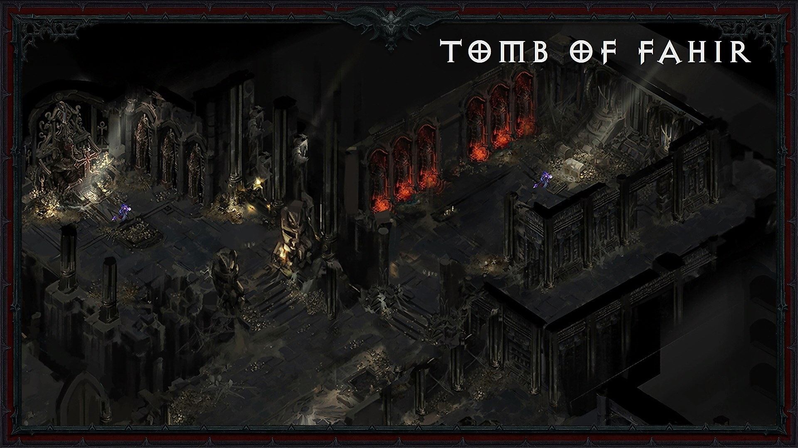 
- Forgotten Tower – Това някога е бил дом на Графинята то Диабло 2, но сега се обитава от покравен култ. Посредством ритуали с кръв, те са успяли да съживят Графинята, която сега господства в Darkwood.
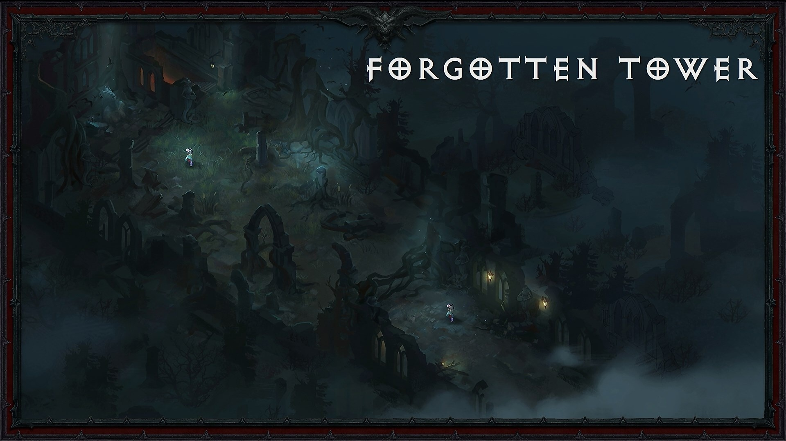 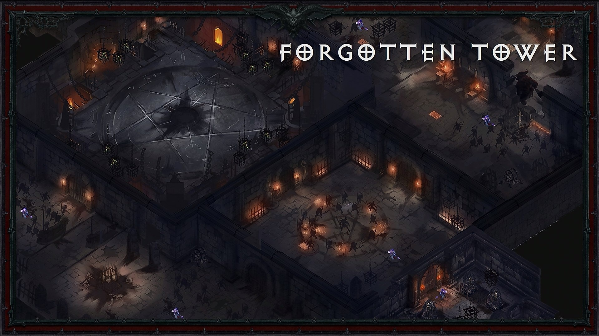 
Endgame
Освен подземията, за които говорихме по-горе, Близард споменаха ще Greater рифтовете ще се завърнат, както и обновена версия на Парагоните в енд гейма на играта. Детайлите за тези системи, обаче, бяха доста оскъдни.
Предмети и съоръжение
Информацията за предметите в Диабло Имортал също беше оскъдна. Не е ясно колко слота играчите ще могат да обличат с предмети, нито за какви статове ще се борим. Беше потвърдено, че легендарните предмети ще са основните предмети в прогрес системата. Вижте някои от тях по-долу.
- Flamespite – превръща смъртоносни стрели в гранати, когато се използва Strafe.

- Winter’s Remorse – Превръща Fireball в леден Frozen Orb.

- Inna’s Palm – променя начина, по който Exploding Palm таргетира противниците и разпределя демиджа.

- Storm Bringer – Hammer of the Ancients остава опустушителна мълния на мястото на удара.
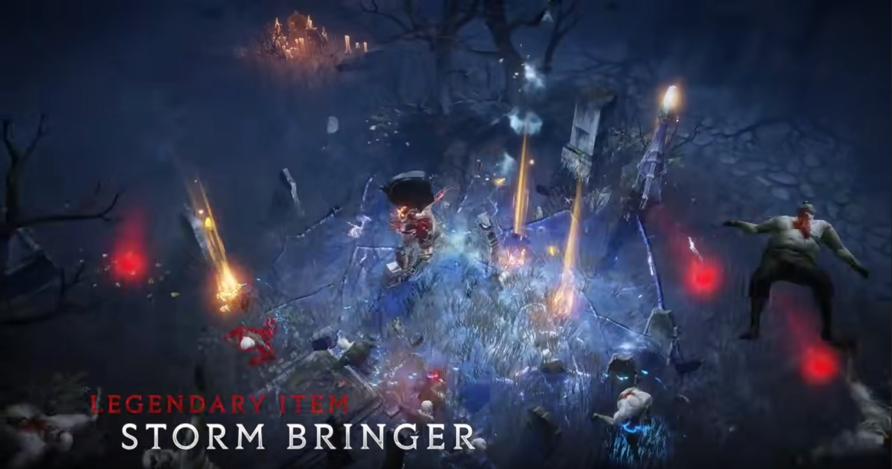
Допълнителни модове и функции
Близард дадоха яснота какви системи можем да очакваме, които са се превърнали в стандартни за този жанр игри.
- Hardcore
- Мода, в който след като героя Ви умре повече не можете да играете с него, няма да бъде наличен за Diablo Immortal. Близард не вярват, че е подходящ за мобилна платформа, но е възможно да размислят.
- PVP
- За момента не е планирано PVP в Diablo Immortal.
Съдържание след официалното излизане
От самото начало на разработката си, Диабло Имортал е замислено да получава периодно ново съдържание и събития. След официалното излизане, можем да очакваме контент ъпдейти, баланс промени, нови зони, подземия, босове, предмети, допълнителни истории и дори нови класове.
- Офлайн режим
- Офлайн режим няма да има. Ще се изисква постоянна свързаност с интернет.
- Социални системи
- Гилдии
- Ще има гилдии, които да спомогнат играта с приятели.
- Мултиплеър
- Играчите могат да играят с до 4-ма играча в парти, с които заедно да се борят с предизвикателствата в Диабло Имортал.
- Гилдии
+2


{kind=link}
{kind=link}
{kind=link}
{kind=link}
{kind=link}
{kind=link}
{kind=link}
{kind=link}
{kind=link}
{kind=link}
{kind=link}
{kind=link}
{kind=link}
{kind=link}
{kind=link}
{kind=link}
{kind=link}
{kind=link}
{kind=link}
{kind=link}
{kind=link}
{kind=link}
{kind=link}
{kind=link}
{kind=link}
{kind=link}
{kind=link}
{kind=link}